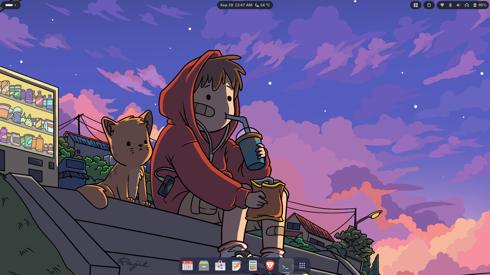
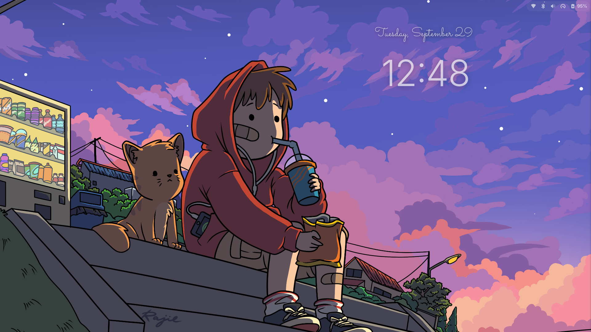

a quiet dusk for your desktop
Fedora Twilight
A soft purple, blue and pink GNOME setup. It installs with one command, survives updates, and can be recoloured from your own wallpaper.


git clone https://github.com/ai-vaibhavv/fedora-twilight cd fedora-twilight ./install.sh --wallpaper ~/Pictures/your-wallpaper.jpg